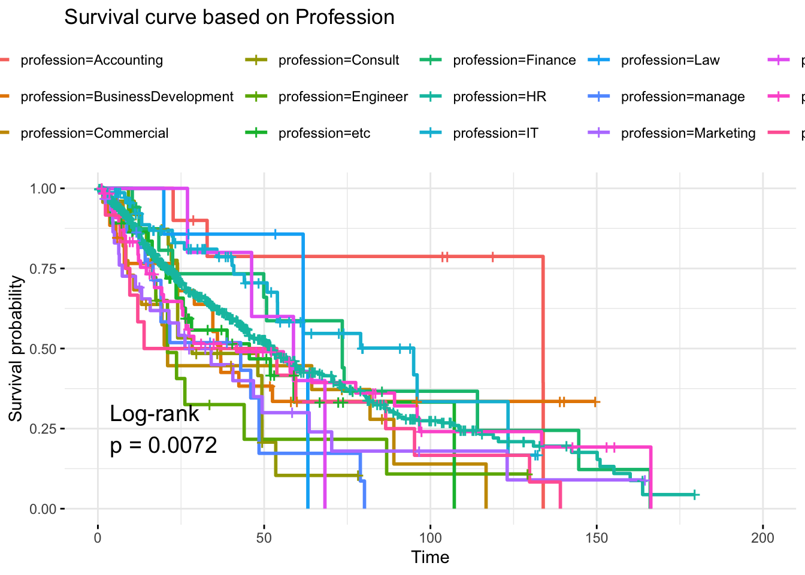
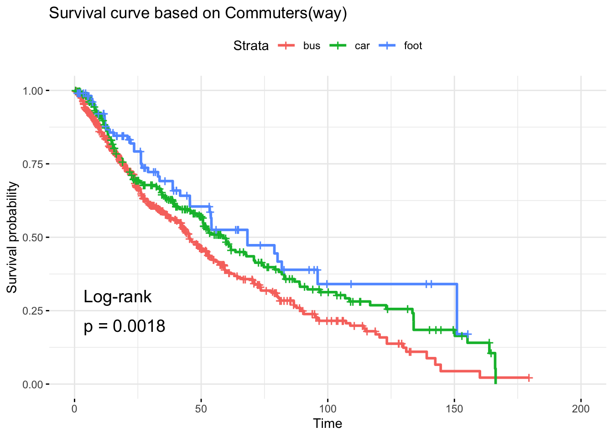

The Cox Proportional Hazards Model, often referred to as Cox Regression, is a widely used statistical method for analyzing and modeling time-to-event data. Developed by Sir David Cox in 1972, this semi-parametric model is a powerful tool for understanding the relationship between predictors and the time until a specified event occurs, such as turnover, equipment failure, or customer churn.
1.1 Key Characteristics
Semi-parametric Nature: Cox Regression does not assume a specific probability distribution for survival times. Instead, it focuses on the hazard ratio to evaluate the effect of predictors [1].
Time-to-Event Analysis: It models the risk (hazard) of an event occurring at a specific time, considering that the event has not occurred before that time.
Handles Censoring: Censoring occurs when the event hasn’t occurred for some subjects by the end of the study. Cox Regression effectively accounts for this.
1.2 Applications of Cox Regression
Cox Regression is used across various fields to analyze survival data and event risks:
1.2.1 Healthcare and Epidemiology
Studying survival rates in patients (e.g., cancer or heart disease).
Evaluating the effect of treatments, such as comparing drug efficacy [2].
1.2.2 Business and Economics
Predicting customer churn or employee turnover.
Analyzing time to equipment failure in operational systems.
1.2.3 Engineering and Reliability
Modeling the lifespan of mechanical systems or components.
Assessing risks in failure times of industrial systems.
1.2.4 Social Sciences
Examining time until marriage, job changes, or retirement.
Investigating relapse rates in criminology studies.
1.3 Limitations of Cox Regression
While Cox Regression is versatile, it has limitations:
Proportional Hazards Assumption:
The model assumes that the hazard ratios between groups are constant over time. Violations of this assumption can lead to incorrect conclusions [2].
Example: The effect of a predictor (like a treatment) may decrease or increase over time.
Inability to Model Complex Time-Dependent Effects:
The standard Cox model struggles with internal time-varying covariates (e.g., changing patient conditions) without additional adjustments.
Difficulty with Small Sample Sizes:
Requires adequate event numbers for reliable estimates.
No Prediction of Exact Survival Times:
It estimates relative risks and hazard ratios but does not predict when an event will occur.
Overfitting:
Including too many covariates relative to the number of events can lead to overfitting.
2 Methods
In this study, we utilize the Cox Proportional Hazards Model to examine factors influencing survival. Cox Regression is a powerful tool in survival analysis that models the relationship between the survival time of subjects and one or more predictor variables. Survival can refer to development of a symptom, time to relapse, or time to death [3]. Its appeal lies in its semi-parametric nature, as it does not assume a specific baseline hazard function, making it robust and popular in diverse fields like medicine, engineering, and social sciences.
2.1 Model Assumptions
A key assumption of the Cox model is the proportional hazards assumption, which asserts that the effects of different variables on the outcome (survival) are constant over time. This means that, although the baseline hazard function can vary over time, the effect of covariates on the hazard is multiplicative and time-independent. Another essential assumption pertains to censoring, where it is assumed that censoring is non-informative, meaning it is unlikely that the event of interest will be observed in all patients and missing or erroneous results can therefore not be included. This differs from logistic or linear regression.
2.2 Model Variants
The primary model employed in this study is the standard Cox Proportional Hazards model, which estimates the hazard function, \(h(t | X) = h_0(t) \exp(\beta X)\), where \(h_0(t)\)represents the baseline hazard and \(\beta\) represents the regression coefficients. In cases where the proportional hazards assumption does not hold, we may consider extensions like stratified Cox models, which allow for covariates that stratify the baseline hazard, or time-dependent Cox models, which can handle time-varying covariates.
2.3 Testing Proportional Hazards
To verify the proportional hazards assumption, we employ the Schoenfeld residuals test, a common diagnostic that assesses correlation between residuals and time. Graphical methods, such as log-minus-log survival plots, are also used to visually inspect proportional hazards. If these diagnostics suggest a violation of the proportional hazards assumption, adjustments are made, including consideration of time-varying covariates.
The image below shows an example of the graphical method using a Kaplan-Meier Survival Plot.
Code
# Load necessary librarieslibrary(survival)library(survminer)# Load the lung datasetdata(lung)# Fit a Kaplan-Meier survival curvefit <-survfit(Surv(time, status) ~ sex, data = lung)# Plot the Kaplan-Meier survival curvesggsurvplot(fit, data = lung, pval =TRUE, conf.int =TRUE, risk.table =TRUE, ggtheme =theme_minimal(), legend.title ="Sex",legend.labs =c("Male", "Female"))
2.4 Interpretation of Outcomes
The output of a Cox model is typically interpreted in terms of hazard ratios. For each predictor, the hazard ratio describes the change in the hazard of the event (e.g., death, failure) for a one-unit increase in the predictor, holding all other factors constant. A hazard ratio greater than one indicates an increased risk, while a ratio less than one suggests a protective effect. If the risk factor is binary, the result can be interpreted as the estimated increase in the hazard ratio in patients with the risk factor vs. those without [4]. P-values and confidence intervals around hazard ratios help determine the statistical significance and reliability of these effects.
2.5 Addressing Time-Varying Coefficients
To account for non-proportionality when it is detected, time-varying covariates may be introduced [5]. This involves creating interaction terms between covariates and functions of time or using an extended Cox model framework. This approach allows the impact of certain variables on the hazard to change over time, enhancing the model’s flexibility and accuracy when the proportional hazards assumption does not strictly hold.
3 Data Analysis and Results
3.1 Dataset Description
We will be applying our method to this dataset from Kaggle that contains real data about employees at a Russian company. There are 16 variables in the dataset, both discrete and continuous, shown in the description table below.
Variable
Description
stag
Experience (time)
event
Employee turnover
gender
Employee’s gender
age
Employee’s age (year)
industry
Employee’s industry
profession
Employee’s profession
traffic
From what pipelene employee came to the company.
coach
Presence of a coach (training) on probation
head_gender
Head (supervisor) gender
greywage
The salary does not seem to the tax authorities.
way
Employee’s way of transportation
extraversion
Extroversion score
independ
Independence score
selfcontrol
Self control score
anxiety
Anxiety score
novator
Innovator score
3.2 Data Preparation
Read the data from our .csv file, load it, and take a quick look at some of the data.
# A tibble: 6 × 16
stag event gender age industry profession traffic coach head_gender
<dbl> <dbl> <chr> <dbl> <chr> <chr> <chr> <chr> <chr>
1 7.03 1 m 35 Banks HR rabrecN… no f
2 23.0 1 m 33 Banks HR empjs no m
3 15.9 1 f 35 PowerGeneration HR rabrecN… no m
4 15.9 1 f 35 PowerGeneration HR rabrecN… no m
5 8.41 1 m 32 Retail Commercial youjs yes f
6 8.97 1 f 42 manufacture HR empjs yes m
# ℹ 7 more variables: greywage <chr>, way <chr>, extraversion <dbl>,
# independ <dbl>, selfcontrol <dbl>, anxiety <dbl>, novator <dbl>
Let’s check for missing and null values, censored observations (where the event being studied did not occur), and check the distribution of the data.
Code
# Check for null and duplicate valuescat("Number of missing values :", sum(is.na(turnover)))
Number of missing values : 0
Code
cat("Number of duplicates: ", turnover %>%duplicated() %>%sum())
Number of duplicates: 13
Code
# Remove duplicate valuesturnover <-unique(turnover)# Check distribution of dataturnover %>%ggplot(aes(x = stag, color =factor(event),fill =factor(event))) +geom_histogram(aes(y = ..density..), alpha =0.5) +geom_density(alpha =0.05) +scale_color_brewer(palette ="Dark2") +scale_fill_brewer(palette ="Dark2") +theme_minimal() +theme(legend.position ="top")
Code
# Check for censored observationsn <-dim(turnover)[1]cat((n -sum(turnover$event))/n *100, "% of observations are censored")
49.82079 % of observations are censored
We can see that our data is skewed heavily to the right, we have no null values, and 49.8% of employees were not terminated.
Now we will take a look at our covariates and separate them based on whether they are discrete or continuous in order to better visualize the distributions.
Code
# Separate variable based on typeNUM_COLS <-c("stag", "age", "extraversion", "independ", "selfcontrol", "anxiety", "novator")CAT_COLS <-c("gender", "industry", "profession", "traffic", "coach", "head_gender", "greywage", "way")# Transform CAT_COLS into categorical typefor (COL in CAT_COLS){ turnover[COL] <- turnover[COL] %>%unlist() %>%factor()}
3.2.1 Categorical Covariates
Code
# Categorical covariates# Selection of covariates (that are only discrete)turnover.cat <- turnover %>%select_if(is.factor) %>%mutate(event = turnover$event)turnover.cat %>%ggplot(aes(x = gender, color =factor(event),fill =factor(event))) +geom_bar(alpha =0.5) +scale_color_brewer(palette ="Dark2") +scale_fill_brewer(palette ="Dark2") +theme_minimal() +theme(legend.position ="top")
From the visualizations, we can see a few variables that might contribute to employee turnover based on their distributions. Below are the observations:
Gender, profession, and way seem to be significant factor given the structure of distribution.
We can see our event (termination) occurs almost evenly throughout our dataset.
Age and stag are heavily right-skewed, most employees being under 40 and tenure being less than 5 years.
Before we move on we need to plot the Kaplan-Meier Survival Plots to ensure we meet the assumption of proportional hazards.
3.2.3 Proportional Hazards Assumption
3.2.3.1 Gender
Code
km_gender<-survfit(Surv(stag, event)~gender, data = turnover, type="kaplan-meier")ggsurvplot(km_gender, data=turnover,conf.int =FALSE,ggtheme =theme_minimal(),legend.labs =c("female", "male"),pval =TRUE,pval.method =TRUE)+ggtitle("Survival curve based on Gender")
3.2.3.2 Industry
Code
km_industry<-survfit(Surv(stag, event)~industry, data = turnover, type ="kaplan-meier")ggsurvplot(km_industry, data=turnover,conf.int =FALSE,ggtheme =theme_minimal(),pval =TRUE,pval.method =TRUE)+ggtitle("Survival curve based on Industry")
3.2.3.3 Profession
Code
km_profession<-survfit(Surv(stag, event)~profession, data = turnover, type="kaplan-meier")ggsurvplot(km_profession, data=turnover,conf.int =FALSE,ggtheme =theme_minimal(),pval =TRUE,pval.method =TRUE)+ggtitle("Survival curve based on Profession")

3.2.3.4 Traffic
Code
km_traffic<-survfit(Surv(stag, event)~traffic, data= turnover, type="kaplan-meier")ggsurvplot(km_traffic, data=turnover,conf.int =FALSE,ggtheme =theme_minimal(),pval =TRUE,pval.method =TRUE)+ggtitle("Survival curve based on Traffic")
3.2.3.5 Coach
Code
km_coach<-survfit(Surv(stag, event)~coach, data = turnover, type="kaplan-meier")ggsurvplot(km_coach, data=turnover,conf.int =FALSE,ggtheme =theme_minimal(),pval =TRUE,pval.method =TRUE)+ggtitle("Survival curve based on Coach")
3.2.3.6 Head_gender
Code
km_headgender<-survfit(Surv(stag, event)~head_gender, data= turnover, type="kaplan-meier")ggsurvplot(km_headgender, data=turnover,conf.int =FALSE,ggtheme =theme_minimal(),legend.labs =c("female", "male"),pval =TRUE,pval.method =TRUE)+ggtitle("Survival curve based on Head Gender")
3.2.3.7 Greywage
Code
km_greywage<-survfit(Surv(stag, event)~greywage, data = turnover, type ="kaplan-meier")ggsurvplot(km_greywage, data=turnover,conf.int =FALSE,ggtheme =theme_minimal(),legend.labs =c("grey", "white"),pval =TRUE,pval.method =TRUE)+ggtitle("Survival curve based on Greywage")
3.2.3.8 Way
Code
km_way<-survfit(Surv(stag, event)~way,data= turnover,type="kaplan-meier")ggsurvplot(km_way, data=turnover,conf.int =FALSE,ggtheme =theme_minimal(),legend.labs=c("bus", "car", "foot"),pval =TRUE,pval.method =TRUE)+ggtitle("Survival curve based on Commuters(way)")

Based on the above survival curve plots, we conclude that the gender, coach, and head_gender variables do not meet the assumption of proportional hazards.
We want to refine the model to use the independent variable(s) with the greatest influence from our crude model. To do this, we will use the “step” function in R which iteratively adds or removes variables based on a chosen criterion. For this model we will use the AIC value. The Akaike Information Criterion (AIC) is a statistical metric that evaluates how well a model fits a given set of data.
Using these results, we can see that the model including independent variables age, industry, profession, traffic, greywage, selfcontrol, and anxiety produced the most accurate survival model. We will use these variables in our adjusted model.
3.3.3 Adjusted Model
Code
model1<-coxph(Surv(stag, event)~age + industry + profession + traffic + greywage + way + selfcontrol + anxiety,data = turnover)summary(model1)
Our results show that age increases the likelihood of employee turnover, as well as certain professions such as Commercial, Engineering, and PR.
3.4 Results
Crude Model
Adjusted Model
Covariate
Hazard ratio (95% CI), p-value
Hazard ratio (95% CI), p-value
genderm
(0.70, 1.15) 0.384
Excluded
age
(1.01, 1.04) 0.002
(1.01, 1.03) 0.001
industryBanks
(0.39, 1.64) 0.537
(0.37, 1.52) 0.424
industryBuilding
(0.37, 1.73) 0.562
(0.36, 1.64) 0.494
industryConsult
(0.32, 1.42) 0.304
(0.31, 1.31) 0.215
industryetc
(0.27, 1.18) 0.128
(0.25, 1.08) 0.080
industryHoReCa
(0.18, 1.53) 0.239
(0.16, 1.32) 0.149
industryIT
(0.14, 0.66) 0.002
(0.13, 0.61) 0.001
industrymanufacture
(0.22, 0.94) 0.032
(0.20, 0.85) 0.016
industryMining
(0.23, 1.32) 0.179
(0.21,1.23) 0.136
industryPharma
(0.14, 0.94) 0.036
(0.14, 0.89) 0.027
industryPowerGeneration
(0.15, 0.86) 0.022
(0.14, 0.80) 0.013
industryRealEstate
(0.06, 0.56) 0.003
(0.05, 0.51) 0.001
industryRetail
(0.17, 0.72) 0.004
(0.16, 0.66) 0.002
industryState
(0.23,1.15) 0.104
(0.22, 1.05) 0.066
industryTelecom
(0.13, 0.73) 0.008
(0.12, 0.67) 0.004
industrytransport
(0.18, 0.99) 0.046
(0.18, 0.96) 0.041
professionBusinessDevelopment
(0.67, 4.94) 0.237
(0.68, 4.83) 0.238
professionCommercial
(1.00, 7.34) 0.049
(1.03, 7.27) 0.043
professionConsult
(0.64, 4.91) 0.272
(0.64, 4.70) 0.281
professionEngineer
(0.94, 7.80) 0.063
(0.92, 7.22) 0.072
professionetc
(0.63, 4.22) 0.317
(0.61, 4.07) 0.343
professionFinance
(0.377, 2.96) 0.917
(0.38, 2.92) 0.910
professionHR
(0.53, 2.84) 0.638
(0.54, 2.87) 0.603
professionIT
(0.41, 2.81) 0.887
(0.41, 2.61) 0.951
professionLaw
(0.42, 5.33) 0.533
(0.39, 4.82) 0.621
professionmanage
(1.36, 9.63) 0.010
(1.36, 9.57) 0.01
professionMarketing
(0.80, 5.32) 0.132
(0.79, 5.16) 0.141
professionPR
(0.66, 8.17) 0.186
(0.65, 7.95) 0.197
professionSales
(0.66, 4.15) 0.280
(0.68, 4.06) 0.266
professionTeaching
(0.61, 5.66) 0.278
(0.61, 5.70) 0.270
trafficempjs
(1.37, 4.69) 0.003
(1.28, 4.32) 0.006
trafficfriends
(0.58, 2.21) 0.721
(0.54, 2.00) 0.917
trafficKA
(0.58, 2.30) 0.688
(0.56, 2.20) 0.769
trafficrabrecNErab
(0.94, 3.18) 0.077
(0.89, 2.95) 0.115
trafficrecNErab
(0.45, 2.01) 0.893
(0.42, 1.85) 0.736
trafficreferal
(0.76, 2.73) 0.257
(0.72, 2.55) 0.337
trafficyoujs
(1.05, 3.53) 0.034
(1.00, 3.33) 0.049
coachno
(0.85,1.316) 0.615
Excluded
coachyes
(0.92, 1.66) 0.164
Excluded
head_genderm
(0.86, 1.29) 0.590
Excluded
greywagewhite
(0.46, 0.79) 0.0002
(0.46, 0.78) 0.0001
waycar
(0.67, 1.00) 0.052
(0.66, 0.99) 0.039
wayfoot
(0.48, 0.94) 0.020
(0.49, 0.96) 0.029
extraversion
(0.95, 1.09) 0.639
Excluded
independ
(0.91, 1.05) 0.587
Excluded
selfcontrol
(0.89, 1.02) 0.202
(0.90, 0.98) 0.007
anxiety
(0.89, 1.02) 0.158
(0.90, 1.00) 0.060
novator
(0.95, 1.07) 0.766
Excluded
The model comparison confirms our findings and subsequent refining of the model to achieve the best fit. Variables that did not meet the assumption of proportional hazards were excluded as well as variables that were found to be non-significant.
3.5 Predictions
We will now use our adjusted model to predict 3-year survival rates between two employees, one age 25 and one age 55. All other variables will remain the same.
age industry stag event profession traffic greywage way independ selfcontrol
1 25 IT 36 0 manage empjs white car 5 5
2 55 IT 36 0 manage empjs white car 5 5
anxiety prob lcl ucl
1 5 0.3833291 0.12799615 0.6386621
2 5 0.1693049 -0.05614262 0.3947524
Our results show a survival probability of 38% for the 25-year old, and 17% percent for the 55-year old.
4 Conclusion
For companies, reducing employee turnover is paramount. Increased spending in onboarding, learning, and development means that a significant portion of resources goes into hiring a new employee. A predictive analysis model like that achieved with Cox Regression is a great tool to reduce attrition and build a healthy, productive workforce. In this paper, we have analyzed real business data to show how Cox Regression can be used to identify employee pain points and potentially decrease the risk of turnover. We have looked at data preparation and assumptions necessary to use the Cox Regression method and create a well-fit model.
While Cox Regression can’t guarantee employee turnover, or lack thereof, it does point us in a helpful direction to better assess a company. With expanded data among different companies and variables, we could have a better potential of identifying and mitigating risk.
5 References
[1]
Z. Zhang, “Semi-parametric regression model for survival data: Graphical visualization with R,”Ann. Transl. Med., vol. 4, no. 23, p. 461, Dec. 2016.
[2]
D. W. Hosmer, S. Lemeshow, and S. May, Applied survival analysis, 2nd ed. in Wiley series in probability and statistics. Chichester, England: Wiley-Blackwell, 2008.
[3]
S. J. Walters, “Analyzing time to event outcomes with a cox regression model,”Wiley Interdiscip. Rev. Comput. Stat., vol. 4, no. 3, pp. 310–315, May 2012.
[4]
S. Abd ElHafeez, G. D’Arrigo, D. Leonardis, M. Fusaro, G. Tripepi, and S. Roumeliotis, “Methods to analyze time-to-event data: The cox regression analysis,”Oxid. Med. Cell. Longev., vol. 2021, no. 1, p. 1302811, Nov. 2021.
[5]
Z. Zhang, J. Reinikainen, K. A. Adeleke, M. E. Pieterse, and C. G. M. Groothuis-Oudshoorn, “Time-varying covariates and coefficients in cox regression models,”Ann. Transl. Med., vol. 6, no. 7, pp. 121–121, Apr. 2018.


1.2.4 Social Sciences
Examining time until marriage, job changes, or retirement.
Investigating relapse rates in criminology studies.